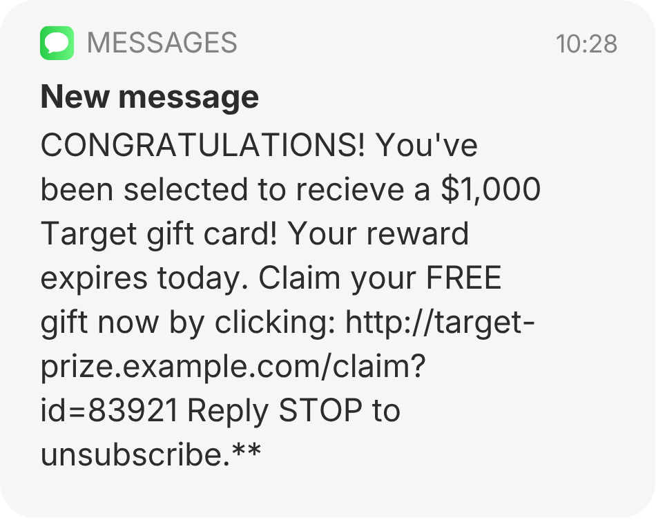
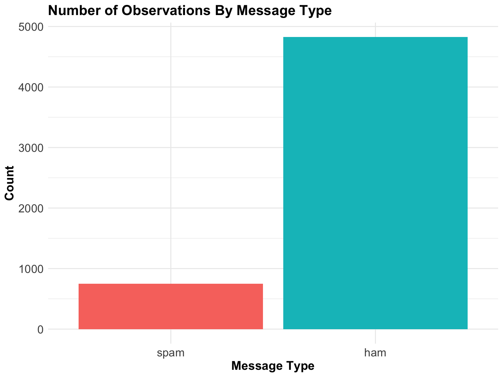
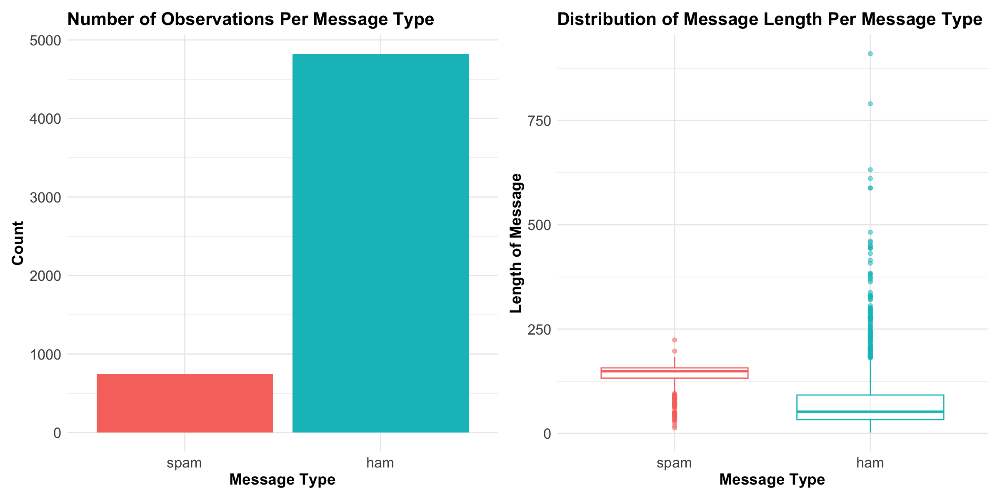
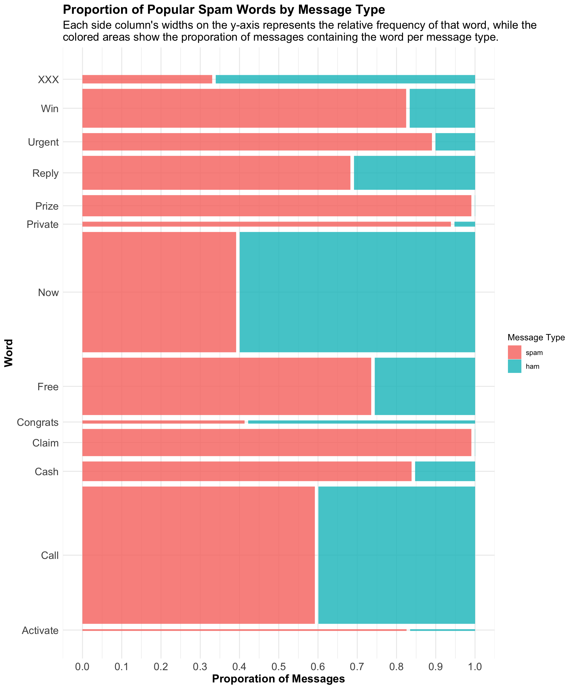
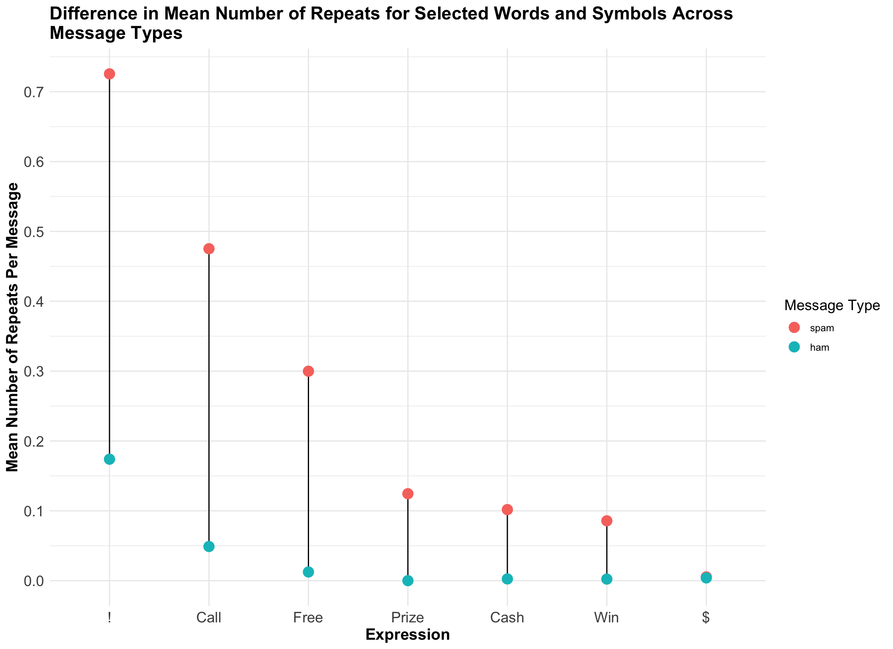
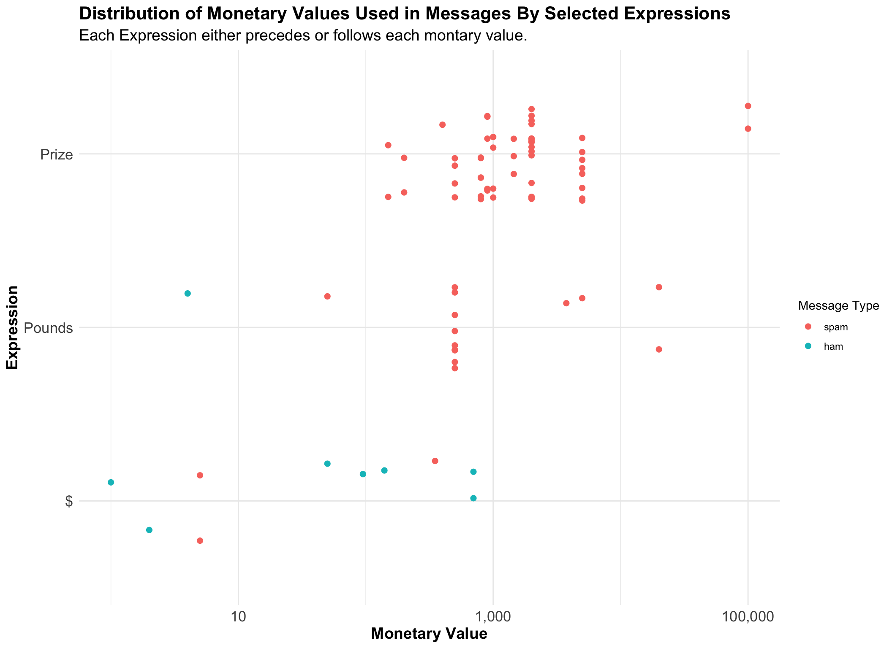

Inside the Language of SMS Spam: Characterizing Spam Messaging Using Regular Expression
Author
Yousif Najat
Published
October 14, 2026
Introduction

Figure 1: SMS Message
Now we’ve all been there. After all, who can say no to a FREE $1,000? Just click the link!
In all reality, you probably shouldn’t click that link. This is yet another SMS spam message. SMS (Short Message Service) spam messages are unsolicited texts—messages not prompted by recipients—that are often sent in bulk to a large number of mobile phones. While often persuasive, deceptive, and sometimes indistinguishable from legitimate messages (like “Hi, I wanted to check up on you”), SMS spam messages can be more than an annoyance; they can also pose serious digital security risks.
Thus, it is natural to wonder: What exactly characterizes spam messages? What linguistic patterns might be more prominent in spam messages compared to legitimate ones? And how can we use this knowledge to better distinguish between spam and legitimate messages?
These are some of the questions this project seeks to tackle.
Data & Data Source
The SMS Spam Collection dataset contains 5,572 tagged SMS messages that have been collected for the purpose of SMS Spam research. Each message in the dataset is tagged as either ham—a legitimate message—or spam, to distinguish between the message types. Moreover, as we can observe from the bar chart below, less than 1,000 messages in the dataset are spam while all other messages are ham (legitimate messages).
Code
library(tidyverse)library(stringi)library(patchwork)library(ggmosaic)library(scales)# Import datasetsms <-read_csv("spam.csv")sms <- sms |>select("v1", "v2") |>rename(Label = v1, Message = v2)# Original dataset includes characters that R does not recongize, so let's change all such character to '`' which has no instances in the original dataset.sms <- sms |>mutate(Message =iconv(Message, from ="", to ="UTF-8", sub ="`"), Label =factor(Label, levels =c("spam", "ham")))# From dataset, how many messages are ham vs spam?sms_bar <- sms |>ggplot(aes(x = Label)) +geom_bar(aes(fill = Label)) +labs(title ="Number of Observations By Message Type", x ="Message Type", y ="Count") +theme_minimal() +theme(plot.title =element_text(face ="bold", size =16), axis.title =element_text(face ="bold", size =14), axis.text =element_text(size =13), legend.position ="none")sms_bar

The dataset used in this project was downloaded from Kaggle; however, the original dataset was obtained from the UC Irvine Machine Learning Repository and can be found at the citation below:
Almeida, Tiago and Jos Hidalgo. “SMS Spam Collection.” UCI Machine Learning Repository, 2011, https://doi.org/10.24432/C5CC84.
The dataset is also available in the GitHub repository for this website.
Analysis: Characterizing SMS Spam Messages
Code
# Let's visualize message length (includes spaces) per message typesms_box <- sms |>ggplot(aes(x = Label, y =str_length(Message))) +geom_boxplot(aes(color = Label), alpha =0.5) +labs(title ="Distribution of Message Length By Message Type", x ="Message Type", y ="Length of Message") +theme_minimal() +theme(plot.title =element_text(face ="bold", size =16), axis.title =element_text(face ="bold", size =14), axis.text =element_text(size =13), legend.position ="none")sms_box

Code
# Let's find the median message length for each message typesms |>group_by(Label) |>summarize(Median =median(str_length(Message)))
# A tibble: 2 × 2
Label Median
<fct> <int>
1 spam 149
2 ham 52
Code
# Median Length of Message for ham: 52 Characters# Median length of Message for spam: 149 Characters
When analyzing the boxplots and table above, we observe that spam messages have a higher median length of 149 characters compared to ham messages, which have a median length of 52 characters. Additionally, we also observe that the distribution of spam message lengths is less variable and more concentrated than that of ham messages.
Code
# Let's visualize the proporation of "spam" words by message types. sms_words <- sms |>mutate(Message =str_to_lower(Message)) |>mutate(Free =str_detect(Message, "\\bfree\\b"),Win =str_detect(Message, "\\bwin\\b | \\bwon\\b"),Claim =str_detect(Message, "\\bclaim\\b"),Urgent =str_detect(Message, "\\burgent\\b"),Prize =str_detect(Message, "\\bprize\\b"),Call =str_detect(Message, "\\bcall\\b"),Now =str_detect(Message, "\\bnow\\b"),Reply =str_detect(Message, "\\breply\\b"),Congrats =str_detect(Message, "\\bcongrats\\b | \\bcongratulation(s)?\\b"),Activate =str_detect(Message, "\\bactivate\\b"),Private =str_detect(Message, "\\bprivate\\b"),Cash =str_detect(Message, "\\bcash\\b"),XXX =str_detect(Message, "\\bxxx\\b") ) sms_word <-pivot_longer(sms_words, Free:XXX, names_to ="Word", values_to ="Contains")sms_word |>filter(Contains) |>count(Label, Word) |>ggplot() +geom_mosaic(aes(x = Word, fill = Label, weight = n)) +scale_y_continuous(breaks =seq(0,1, by =0.10)) +labs(title ="Proportion of Spam-Associated Words by Message Type", subtitle =str_wrap("Each side column's widths on the y-axis represents the relative frequency of that word in the dataset, while the colored areas show the proporation of messages containing the word per message type.", width =100), y ="Proporation of Messages", fill ="Message Type") +coord_flip() +theme_minimal() +theme(plot.title =element_text(face ="bold", size =16), plot.subtitle =element_text(size =14), axis.title =element_text(face ="bold", size =14), axis.text =element_text(size =13))

The mosaic plot above illustrates the proportion of spam and ham messages containing each spam-associated word, while also providing information about the relative frequency of each word in the dataset. As can be observed from the plot, more spam messages than ham messages contain the words: Win, Urgent, Reply, Prize, Private, Free, Claim, Cash, Call, and Activate. Additionally, the words Call, Free, Win, Relpy, and Claim, have higher relative frequencies than other the words, suggesting that these words are not only associated with spam messages but are also more commonly used across spam messages. Interestingly, the words Now, XXX, and Congrats/Congratulations appear more frequently in ham messages than spam messages, suggesting that these words may not be as useful in distinguishing between spam and ham messages.
Code
# Let's visualize repetition of specific symbols and words by message types. sms_duplicates <- sms |>mutate(Message =str_to_lower(Message)) |>mutate(Exclam =str_count(Message, "!"),Money =str_count(Message, "\\$"),Free =str_count(Message, "\\bfree\\b"),Win =str_count(Message, "\\bwin\\b"),Cash =str_count(Message, "\\bcash\\b"),Call =str_count(Message, "\\bcall\\b"),Prize =str_count(Message, "\\bprize\\b") )sms_dups <- sms_duplicates |>pivot_longer(Exclam:Prize, names_to ="Expression", values_to ="Contains")sms_dup_viz <- sms_dups |>group_by(Label, Expression) |>summarize(Mean_Repeats =mean(Contains)) |>mutate(Expression =fct_relevel(factor(Expression), c("Exclam", "Call", "Free", "Prize", "Cash", "Win", "Money"))) |>ggplot(aes(x = Mean_Repeats, y = Expression)) +geom_line() +geom_point(aes(color = Label), size =4) +coord_flip() +labs(title =str_wrap("Difference in Mean Number of Repeats for Selected Words and Symbols Across Message Types", width =80), x ="Mean Number of Repeats Per Message", color ="Message Type") +scale_x_continuous(breaks =seq(0,1, by =0.10)) +scale_y_discrete(labels =c("Exclam"="!", "Money"="$")) +theme_minimal() +theme(plot.title =element_text(face ="bold", size =16), axis.title =element_text(face ="bold", size =14), axis.text =element_text(size =13), legend.title =element_text(size =13), legened.text =element_text(size =13))sms_dup_viz

From the graph above, we can start to understand the relationship between the repetition of specific words/symbol and message type. More specifically, we observe that spam messages have a far higher average number of repetitions for !, Call, Free than ham messages—although this was the general trend across all the selected symbols and words. This suggests that the number of repetitions of !, Call, Free may be particularly useful in determining if a message is spam or ham, as !, Call, Free have the greatest differences in average repetitions between the two message types.
Code
# Let's visualize monetary values used in messages by message type.sms_moneys <- sms |>mutate(Message =str_to_lower(Message)) |>mutate(Pounds =parse_number(str_extract(Message, "\\d{0,3},?\\d{1,3}(?= pounds)")),Money =parse_number(str_extract(Message, "(?<=\\$)\\d{0,3},?\\d{1,3}")),Prize =parse_number(str_extract(Message, "\\d{0,3},?\\d{1,3}(?= prize)")) ) |>pivot_longer(Pounds:Prize, names_to ="Expression", values_to ="Number")sms_money_viz <- sms_moneys |>ggplot(aes(x = Number, fill = Label)) +geom_histogram(na.rm =TRUE) +scale_x_log10(labels =label_comma()) +facet_grid(~Label) +labs(title ="Distribution of Monetary Values Used in Messages By Message Type", subtitle =str_wrap('Any values preceding the words "pounds" and "prize" (regardless of case), as well as any values following the "$" symbol, were considered monetary values.', width =130), x ="Monetary Value", y ="Count", fill ="Message Type") +theme_bw() +theme(plot.title =element_text(face ="bold", size =16), axis.title =element_text(face ="bold", size =14), axis.text =element_text(size =13), legend.title =element_text(size =13), legened.text =element_text(size =13))sms_money_viz

As seen in the histograms above, the most common monetary value used in spam messages is 1000, with most spam messages (that contain a monetary value) containing monetary values around this amount. On the other hand, the monetary values in ham messages are all less than 1000 and scattered, with no clear and common monetary value. This may be due to the smaller number of observations of ham messages that contain monetary values as compared to spam messages, which also suggests that spam messages are more likely to contain monetary values than ham messages. Lastly, it is important to note that for values preceding “pounds,” the use of pounds as a unit of mass could also have been included as a monetary value, meaning that the “4” in a message stating “I want 4 pounds of apples” could have been extracted as a monetary value.
Conclusion
Although several characteristics of spam messages were explored, let’s now bring them all together and summarize our findings.
Based on the dataset we utilized and the analysis completed, we can generally characterize spam messages linguistically and physically as:
Having a length of ~132.5-157 characters (Q1 and Q3 of boxplot).
Containing words such as Win, Urgent, Reply, Prize, Private, Free, Claim, Cash, Call, and Activate.
Containing higher than average number of repetitions of !, Call, Free.
Containing monetary values of 1,000 or around 1,000.
Therefore, by identifying the patterns and characteristics that distinguish spam messages from ham messages, our analysis has helped establish a clearer definition of spam messages and a general criteria for distinguishing between the two message types.